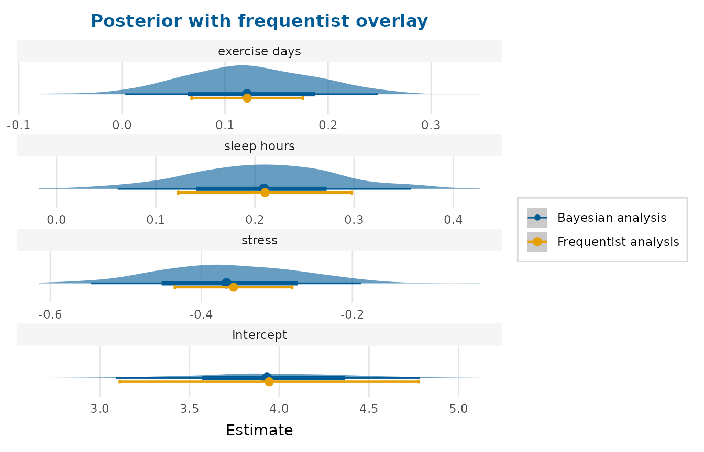

Plot frequentist and Bayesian estimates together
Source:R/frequentist_bayesian_plot.R
frequentist_bayesian_plot.RdPresents the estimates from a frequentist model and a Bayesian model on one
plot, with the two sources distinguished by the first two colours of the
colourblind-safe depictr_palette() (brand blue and orange).
Usage
frequentist_bayesian_plot(
frequentist,
bayesian,
conf_level = 0.95,
labels = NULL,
interaction = c("times", "asterisk", "colon", "space"),
intercept = TRUE,
facet = TRUE,
scales = c("free", "fixed"),
note_frequentist_no_prior = FALSE,
vertical_line_at_x = 0,
title = NULL,
subtitle = NULL,
x_lab = "Estimate",
...
)Arguments
- frequentist
A frequentist model (e.g. from
lm,glmorlmerTest::lmer) or a tidy data frame of estimates.- bayesian
A Bayesian model, a
posteriordraws object, a draws matrix/data frame, or a tidy data frame of posterior summaries.- conf_level
Confidence/credible level for models.
- labels, interaction, intercept
See
compare_models().interceptdefaults toTRUEhere, matching the original behaviour.- facet, scales
Layout controls. Because a Bayesian model almost always carries a large intercept alongside small slopes, the comparison defaults to a faceted, free-scaled layout (
facet = TRUE): each term gets its own panel and free x-axis, so every posterior and its frequentist overlay stay legible. Passfacet = FALSE(orscales = "fixed") for the classic single shared-axis plot.- note_frequentist_no_prior
If
TRUE, append "(no prior)" to the frequentist legend label, which is helpful when the title names the Bayesian prior.- vertical_line_at_x
Position of the vertical reference line (
NAto omit).- title, subtitle, x_lab
Title, subtitle and x-axis label.
- ...
Further arguments passed to
compare_models()on the summary path (ignored on the distribution path).
Value
A ggplot2::ggplot object.
Details
This is the modernised successor to the original frequentist_bayesian_plot()
gist, which built on brms::mcmc_plot() to show the full Bayesian posterior
with the frequentist estimate overlaid. That namesake behaviour is restored
here: when bayesian carries posterior draws (a brms/rstanarm fit, a
posterior draws object, a draws matrix, or a long/wide draws data frame),
the full posterior distribution is drawn per term (a 'ggdist' half-eye)
and the frequentist point and confidence interval is overlaid at the same
position. When bayesian is only a tidy table of posterior summaries
(columns such as term, estimate, conf.low/conf.high, or the
Estimate, l-95% CI, u-95% CI of brms::fixef()), the function shows the
familiar two-source forest plot via compare_models().
Terms are aligned by their canonical display label, so the brms-style b_
prefix is reconciled automatically against the frequentist term names.
Examples
# Summary path: a tidy "Bayesian" summary as a data frame. The summary here
# stands in for a regularised posterior, so a weakly informative prior pulls
# each estimate toward zero and narrows its interval; a real posterior would
# come from the model fit rather than from arithmetic on the frequentist one.
freq <- lm(life_satisfaction ~ stress + sleep_hours + exercise_days,
data = wellbeing_survey)
bayes <- tidy_estimates(freq)
bayes$estimate <- bayes$estimate * 0.9
half <- (bayes$conf.high - bayes$conf.low) / 2 * 0.8
bayes$conf.low <- bayes$estimate - half
bayes$conf.high <- bayes$estimate + half
frequentist_bayesian_plot(freq, bayes,
title = "Frequentist vs. Bayesian estimates")
 # Distribution path: simulated posterior draws (one column per term) drawn as
# full posteriors with the frequentist point + CI overlaid.
set.seed(1)
co <- coef(freq)
draws <- as.data.frame(lapply(co, function(m) rnorm(400, m, abs(m) * 0.1 + 0.05)))
names(draws) <- names(co)
frequentist_bayesian_plot(freq, draws,
title = "Posterior with frequentist overlay")
# Distribution path: simulated posterior draws (one column per term) drawn as
# full posteriors with the frequentist point + CI overlaid.
set.seed(1)
co <- coef(freq)
draws <- as.data.frame(lapply(co, function(m) rnorm(400, m, abs(m) * 0.1 + 0.05)))
names(draws) <- names(co)
frequentist_bayesian_plot(freq, draws,
title = "Posterior with frequentist overlay")
